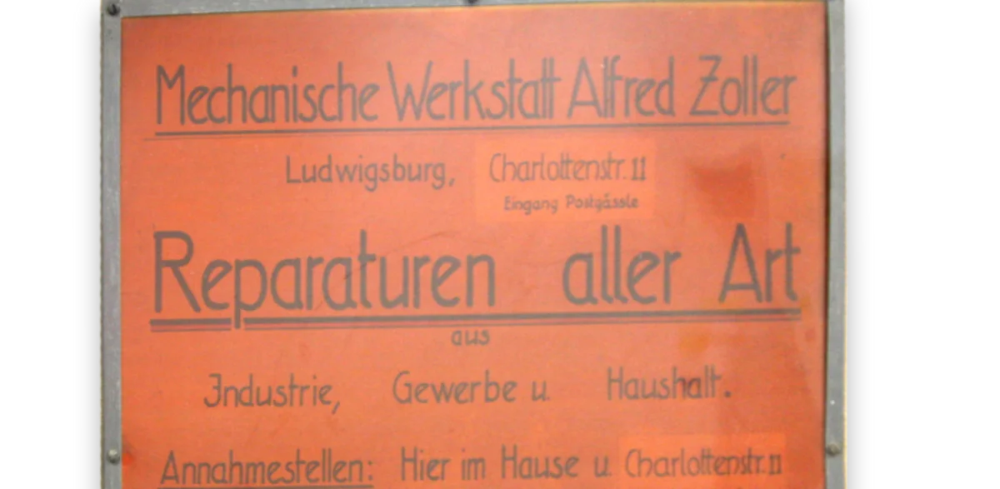

Rückkehr und Neubeginn
Alfred Zoller kehrt aus Berlin zurück nach Ludwigsburg. Neun Jahre war er als Mechanikermeister abkommandiert gewesen zu Hirth Flugmotoren. Am 1. September gründet Alfred Zoller in der Bogenstraße in Ludwigsburg seine mechanische Werkstatt. Der 2. Weltkrieg war seit knapp vier Monaten zu Ende. Entsprechend schwierig sind die Startbedingungen. Einerseits gibt es viel zu reparieren, andererseits sind Werkzeuge, Material und Maschinen knapp.
 Alfred Zoller
Alfred Zoller Bogenstraße in Ludwigsburg
Bogenstraße in Ludwigsburg

Füllfederhalter, Feuerzeuge, Feuerwehrspritzen
Alfred Zoller repariert Motoren, Feuerwehrspritzen, Kinderspielzeug, Füllfederhalter und was die Leute noch so zu ihm bringen. Zusätzlich setzt er defekte Maschinen instand. Sie sind die Basis, um selbst Produkte herzustellen.
Besonders erfolgreich sind seine Feuerzeuge aus Aluminium, die er auf seiner Drehmaschine fertigt. Amerikanische Soldaten werden mit der Zeit seine wichtigsten Kunden. Sie bezahlen die Feuerzeuge hauptsächlich mit Zigaretten, Erdnussbutter oder Schokolade.